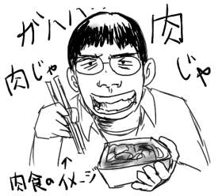
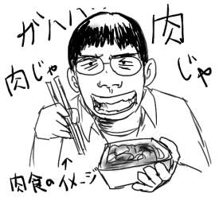
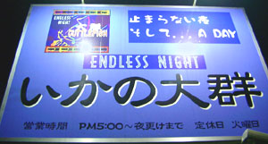
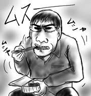

休日出勤してました．
午前中，僕が一人隔離されながら実験をしている間に昼飯の弁当が発注されたらしく，強制的に焼き肉弁当になっていました．昨日たらふく食べたのに…．
午後，僕が実験室で実験をしている間に，余った焼き肉弁当が僕の机の上におかれていました．聞けば，今日出勤している人の中で唯一の独り者である僕が引き取る権利を有しているそうです．飯代が浮くのはとてもありがたいのですが，昼も夜も昨日も焼き肉…．
28歳になった今，一時的に焼き肉大好きっこになっています．
休日出勤してました．
午前中，僕が一人隔離されながら実験をしている間に昼飯の弁当が発注されたらしく，強制的に焼き肉弁当になっていました．昨日たらふく食べたのに…．
午後，僕が実験室で実験をしている間に，余った焼き肉弁当が僕の机の上におかれていました．聞けば，今日出勤している人の中で唯一の独り者である僕が引き取る権利を有しているそうです．飯代が浮くのはとてもありがたいのですが，昼も夜も昨日も焼き肉…．
28歳になった今，一時的に焼き肉大好きっこになっています．
誕生日でした．実家から祝いの言葉というよりは愚痴がしたためられた手紙が届くまで気付きませんでしたけど．
せっかくなので実家に電話をかけましたよ(以下方言で)．
「元気にしよん？」
「まぁ元気よ」
「風邪とか流行っとるみたいやけん，気ぃつけなあかんで」
「平気平気．家の中では裸足でおるくらい平気」
「え？なんで裸足？」(いきなりマジ)
「…え？…あー…．いやなんか…裸足やと元気そうやん…」
(母親大爆笑)
そんなに笑わなくてもいいのにと思いました．
誕生日は，++ageじゃなくてage++だと思うので，今日はまだ年齢は増えないという方向で．
そしてどんよりとした曇天が僕の誕生日を呪っている感じです．
自分へのプレゼントを買おうかと一人秋葉に出かけたのですが，特にめぼしい物はありませんでした．西原さんと合流して大酋長という安くてうまい焼き肉屋で腹一杯ジンギスカンを食って帰宅．
ラム肉はうまいのですが，匂いがすごいことになるのが問題です．帰り電車に乗り込んだ途端，向かいに立っていたおじさんが鼻をひくつかせていたのが印象的でした．すいません．
会社帰りにコンビニに寄ると，学習塾帰りのお子さま達が大挙して雑誌コーナーにたむろしていました．未来の日本を担うために日夜勉学に勤しんでいるのだ，偉いなあと思いながら横を通り過ぎると，やつらパチスロ必勝法を立ち読みしてやがりましたよ．
いくら最近の小学生は体格がいいと言っても，ランドセル背負って学校行ってるような奴らが紛れ込んでいたら速攻バレると思います．どうやってんの!?
会社帰りに自転車を飛ばしてBOOK OFFまで寄り道．店内でナチュラルにZooの「チュー・チュー・トレイン」がかかっていました．ネタとしてはありがちだけど，マジだとびっくりします．店内の有線まで中古にしなくてもいいのに，といつも思います．
あと，BOOK OFFは，ネットワーク関係の書籍棚に巧妙にネットビジネス本を紛れ込ませるのもうまい．すごい．
看板シリーズ：
止まらない夜 そして...A DAY
ENDLESS NIGHT
いかの大群
…まったく意味がわかりません．
昨日までの日記は，昨日一気に書き上げていたのですが，絵をつける時間が取れなかったので今日まとめて更新しました．なんかすごい．
出来心で，仕事の合間にツール群をmakeし始めたところ，定時内で終わらずに帰宅が遅れただけでなく，最後の最後でmakeを丸々やり直す羽目になってしまいました．ムキー．結局終わるまで待つのは諦めて，電源入れっぱで会社を出ました．
すると，あんなにいい天気だった空が一気にかき曇り，豪雨へとまっ逆さま．自転車にまたがりながら水滴の蹂躙を受ける羽目に．神様は僕がお嫌いか？
飛浩隆『グラン・ヴァカンス』(早川Jコレクション)を読んだり，まどろんだりしてたら一日が終わっていました．
前半の戦闘シーンは，特殊能力とトンチの組み合わせ(スタンドバトル)+ネット上の攻防という感じでとてもおもしろいのに，後半になるとSFホラーの様相を呈し始めてなんだかグダグダに．ネット上という舞台設定でドロドロはいかんと思います．残念．
作者は自覚的かどうか分かりませんが，メタプログラミングSF(なんだそれ)とも言うべき大ネタに発展できそうな素材を単なるお飾りにしてしまっています．うまくやれば傑作計算機SFになれるのに，惜しいなぁ惜しいなぁ．それは次巻からのお楽しみ(なんたって3部作)と言われれば，作者の焦らし上手さに舌を巻いて待ちますが，最後の一節を読む限り，あまり期待できないなぁ．
西原さん，まさしろという代わり映えのしないメンバーで代々木公園まで「北海道フェア」に出かけました．田舎者の僕には代々木公園という概念が(以下略)．
最寄り駅である原宿駅前の路上では，ビジュアル系のコスプレをした若人の隣に白髪の老人達が並んで座り込んでいると言うかなり異常な光景が見られました．外国の観光客がカメラを構えて，珍しそうにその様子を写し取ろうとしていたので，割り込んで弁解したい気持ちで一杯になりました．「これはな，ちゃうねん」と．(通じない)
会場で，まだ日も高いうちから，ジンギスカンやら，ソーセージやら，ニシンの丸焼き(子持ち！)やらをツマミながら北海道地ビールを飲むという，かなり脳味噌ゆるゆる人間と化していました．フェアなんだからボッタクリなんだろうなあと勝手な先入観を持っていましたが，物の割に値段が安くてびっくり．つぶ貝の串焼きなんて100円ですよ．どれもこれもウマくて満足．
ところが，調子に乗っていろいろ買い求め過ぎ，「お前食えよ」「もういらん」「食えよ」という押し付け合いからかなり気まずい雰囲気に．胃の内容物が増えるのに反比例してどんどん口数が少なくなっていきます．最終的にはお互いの目を見て話す余裕もなくなり，食えばいいんだろう食えば！という感じで黙々とコロッケを口に運んでいました．すっかり日も短くなり，あたりを暗闇が支配し始めていました．あの時間帯には魔物がいるのだと思います．

同期の結婚パーティに出かけました．同期同士の結婚ということで集まったのは同期だけ．そういう意味では顔見知りしかいないので通常の結婚パーティよりも楽ではあるのですが，やっぱり話すことはあまりないので，入社研修時に班が同じだったとかである程度親しくしていた同期と近況報告をし合った以外は，はみ男子系の暗黒同期と隅っこの方でじっとしていました(最低)．
あと僕に話しかけて来てくれた数少ない女性は全員人妻というあたりに僕の無害さがよく現れていると思います．
田舎者の僕には「会場は天王洲アイル」と言われても，そもそも天王洲アイルという概念がよく分からなかったのですが，家が近い同期と一緒に出かけることで何とか会場にたどり着くことが出来ました．危ない危ない．「お台場」と同じような物だと思っていたので，そんな広い範囲で言われても分からないよ！と一人憤慨していたのですが，チャペル付きの大きいホテルにちょっとしたショッピングモールとコンサートホールとレストランがくっついたような単なる一つの建物でした．
会場の天王洲アイル恐ろしいほど人気がなく，受付開始まで時間を潰したエクセシオールカフェでは，僕ら以外の客は派手なおばちゃん一人だけという有り様で，かなり不安になれました(経営)．
昨日は現実逃避として、ゲーム音楽の着メロサイトでカッコいいゲーム音楽着メロを探し回っていました。今ってこんなにいろいろあるのな！(遅い)
セガ「SDI」の本物そっくりなFM音源が携帯から流れて来た時にはちょっと涙したよ。
携帯を買ってから初めて本格的に携帯用サイトを利用したのですが、携帯用サイトってパソコン通信に似てますね。草の根でオレ通AtoZですね。退化！
課金を気にしながら利用するからというのは当然として、感想掲示板やリクエスト掲示板、障害報告掲示板、雑談掲示板などなど、サイト内にやたらたくさんの掲示板が乱立しているのもそれっぽいです。掲示板は全く無視していたのですが、もしかしてDOM野郎で批判対象ですか？
身代わりプログラムの10/5分の日記でTV版ドラえもんが狂った！という情報を得ていたので、仕事を早めに切り上げて19時には家にいるぞ、と思っていたのですが、残念ながら帰るタイミングを逸してしまって帰宅した時には「ドラえもん」はおろか「あたしンち」もとっくに終わっていました(録画しましょう)。そのおかしな演出もさることながら、今のアニメドラの異様に太い二の腕が直っているかどうかが、とても気になっています。